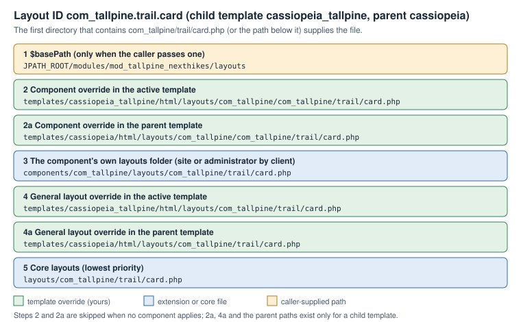

Joomla Layouts and Module Chromes
|
This content was generated with the assistance of AI and should be verified against the official documentation before being relied on in production. |
A layout is a small PHP file that turns an array of data into HTML. Joomla uses layouts for the building blocks that
many screens share — an image tag, a pagination bar, the article information block, the system message area, form
fields, toolbar buttons — and for the wrapper that surrounds every module, the module chrome. Layouts are the
cheapest part of Joomla to customise: a single file dropped into a template’s html/layouts folder replaces the core
file everywhere it is used, with no change to the extension that calls it. This page explains how the layout engine
resolves a layout, which folders it searches, how overrides and sublayouts work, how a module chrome is chosen and
written, and what the jdoc:include statements in a template do.
It was checked against the official documentation and the 6.2 source tree on 2026-10-30. The behaviour described is
that of Joomla 6.2 (current, requiring PHP 8.3 or newer). The layout classes, Joomla\CMS\Layout\FileLayout and
Joomla\CMS\Layout\LayoutHelper, date from Joomla 3.0 and 3.1 and have kept the same public shape through 4.x, 5.x and
6.x, so the techniques here also apply to Joomla 5.4, which now receives security fixes only. Joomla 4.x and 3.x are end
of life.
The examples belong to the Tallpine Hiking Club, the fictitious mountain club used across this sub-section. Its site
uses the child template cassiopeia_tallpine (see Child templates) and the
component com_tallpine. The general idea of module positions is covered in
Modules and positions; this page goes deeper into the layout engine behind
the module styles, and the whole override family is surveyed in
Template overrides and alternative layouts.
Who works with layouts
-
Themers override layouts in a child template to change markup without touching extensions, and write module chromes.
-
Site builders pick a module style for each module on the Advanced tab and place
jdoc:includestatements through the positions a template offers. -
Extension developers ship layouts inside components, modules and plugins, so that themers can override them. Component views are covered in Component site views and routing and modules in Module development.
-
Administrators care mostly about the security and caching consequences covered at the end of the page.
Layouts versus view templates
Joomla has two override mechanisms that are easy to confuse.
-
A view template (
tmplfile) belongs to one view of one component, for example the article view ofcom_content. It is overridden intemplates/<template>/html/com_content/article/default.php. -
A layout is a reusable fragment with an identifier such as
joomla.content.info_block. It is called byLayoutHelper::render()from view templates, from modules, from plugins and from the core renderers. It is overridden intemplates/<template>/html/layouts/joomla/content/info_block.php.
The word layouts in the path is therefore the signal: anything below html/layouts is a layout, and anything else
below html is a view template or a module template. A view template that is overridden in a child template still calls
the original layouts, so the two mechanisms combine.
Older books such as Joomla! 4 Masterclass (2023) and Developing Extensions for Joomla! 5 (2023) cover overrides and
child templates well, but they describe the layout engine only in passing. They also treat child templates as new
(Joomla 4.1); in Joomla 6 a child template is the normal way to customise Cassiopeia, and Joomla 6.0 ships
cassiopeia_extended as a core child template.
LayoutHelper::render()
The everyday entry point is a static helper:
use Joomla\CMS\Layout\LayoutHelper;
echo LayoutHelper::render($layoutId, $displayData, $basePath, $options);Source: Joomla Manual: Layouts
-
$layoutIdis a dot-separated identifier. Each dot becomes a directory separator and.phpis appended, sojoomla.html.imageis the filelayouts/joomla/html/image.php. -
$displayDatais the data the layout needs. Inside the layout file it is available as$displayData. -
$basePathis optional. When it is not empty it is placed at the top of the list of folders searched. When it is empty, the static propertyLayoutHelper::$defaultBasePathis used instead. -
$optionsis an optional array (see Render options).
render() creates a FileLayout, passes it the same arguments and returns its output as a string. The helper has a
sibling, LayoutHelper::debug(), with the same arguments, which renders the layout with the debug output described later.
A first example uses a core layout, the image tag. The layout reads src, escapes src and alt, adds width and
height when it can read the image size and adds loading="lazy".
<?php
defined('_JEXEC') or die;
use Joomla\CMS\Layout\LayoutHelper;
// A hut photo on a Tallpine trail page.
echo LayoutHelper::render('joomla.html.image', [
'src' => 'images/trails/alpine/stormcloud-hut.jpg',
'alt' => 'Stormcloud Hut at sunrise',
'class' => 'img-fluid trail-photo',
]);Source: Joomla Manual: Layouts
The layout’s own header comment states the keys it expects, which is where to look when you reuse a core layout. The
comment also warns that only alt and src are escaped by default for the image layout; the layout escapes every
attribute it prints, but a layout that does not must be fed escaped data. As a rule, a layout escapes at the point of
output, and the caller passes raw values.
FileLayout
Joomla\CMS\Layout\FileLayout does the work. Use it directly when LayoutHelper::render() is not enough, for example to
add a search folder, to set suffixes, or to render the same layout several times with different data.
<?php
defined('_JEXEC') or die;
use Joomla\CMS\Layout\FileLayout;
$layout = new FileLayout('com_tallpine.trail.card', null, ['component' => 'com_tallpine']);
$layout->addIncludePath(JPATH_ROOT . '/tallpine-shared/layouts');
foreach ($this->items as $trail) {
echo $layout->render(['trail' => $trail, 'params' => $this->params]);
}Source: Joomla Manual: Layouts
The public methods worth knowing are:
-
render($displayData)returns the layout output as a string. The output is captured with output buffering aroundinclude, so the layout file may print withechoor inline HTML. Data given earlier withsetData()is merged with$displayDatawhen the latter is an array. -
addIncludePath($path)andaddIncludePaths($paths)put one folder, or several, at the front of the search list.setIncludePaths()replaces the list,removeIncludePath()removes folders andclearIncludePaths()empties the list so that the defaults are recomputed. -
getIncludePaths()returns the folders in the order they are searched. It is a quick way to inspect the result in a debugger. -
setSuffixes(),loadLanguageSuffixes()andloadVersionSuffixes()set the file-name variants to try. -
setComponent()andsetClient()change which component’s folders and which application’s (site or administrator) template are searched. -
sublayout($layoutId, $displayData)renders a subsidiary layout from inside a layout; see Sublayouts. -
escape($output), inherited fromBaseLayout, applieshtmlspecialchars(). Layouts commonly call$this->escape($value). -
get()andset()read and write values on the layout object, andgetOptions()returns the options as aRegistry. Inside a layout file$thisis theFileLayoutinstance, so options are reachable as$this->options->get('client').
A layout is resolved once per combination of layout id, search folders and suffixes in a static in-memory cache, so calling the same layout in a loop does not search the file system again for every item.
The layout folder tree
Core layouts live in the top-level layouts folder of the installation. In 6.2 its first level is:
-
layouts/joomla/— the shared building blocks, in turn split into folders such asbutton,content,edit,editors,error,form,html,icon,installer,links,mail,pagination,quickicons,searchtools,sidebars,system,tinymceandtoolbar -
layouts/chromes/— the system module styleshtml5.php,none.php,outline.phpandtable.php -
layouts/libraries/— layouts used by the HTML helpers, for example the Bootstrap modal parts -
layouts/plugins/— layouts that belong to core plugins, for example the privacy consent, WebAuthn, terms and token plugins and the TinyMCE editor
Some of the layouts most often overridden are:
| Layout id | What it draws |
|---|---|
|
The article information list: author, category, parent category, dates, hits and associations |
|
Tag list, the "Read more" link and the article images |
|
The article edit, create and lock icons |
|
The pagination bar |
|
The system message area printed by |
|
An escaped |
|
Individual form field wrappers |
|
Module styles; see Module chromes |
Components and extensions add their own folders. A component keeps layouts in a layouts folder in its site or
administrator folder (components/com_tallpine/layouts), and by convention each extension puts its layouts in a
subfolder named after the extension to avoid file-name clashes. The layout id for
components/com_tallpine/layouts/com_tallpine/trail/card.php is com_tallpine.trail.card.
Modules and plugins are different. Joomla does not search their folders unless the caller says so, because a module’s
layouts are not meant to be overridden through the component rules. A module that wants to use its own layout folder
passes it as $basePath:
echo LayoutHelper::render(
'mod_tallpine_nexthikes.hike',
['hike' => $hike],
JPATH_ROOT . '/modules/mod_tallpine_nexthikes/layouts'
);Source: Joomla Manual: Layouts
The search order
When FileLayout needs a layout it builds the list of folders in getDefaultIncludePaths() and uses the first folder
that contains the file. In the 6.2 source the order, from highest to lowest priority, is:
-
$basePath, when the caller provided one. -
If a component applies: the component override folder
templates/<template>/html/layouts/<component>in the active template, then the same folder in the parent template when the active template is a child. -
If a component applies: the component’s own
layoutsfolder (site or administrator, chosen by theclientoption). -
The general override folder
templates/<template>/html/layoutsin the active template, then in the parent template. -
The core
layoutsfolder.

Three details matter in practice.
-
A component applies when the
componentoption names an enabled component, or, by default (auto), when a component is the one being dispatched in the current request. In a module or plugin that is not rendered by that component, pass'component' => 'com_tallpine'to include its folders, or'component' => 'none'to skip the component folders entirely. -
The user-facing manual lists four directories. The parent template entries are added by the 6.2 source for child templates and are what make a child template inherit overrides from Cassiopeia: a layout overridden in the parent keeps working, and the child overrides it in turn.
-
The
clientoption decides whether the site or the administrator template is consulted:0orsite,1oradmin; the default follows the application that is running. An administrator layout is therefore overridden inadministrator/templates/atum/html/layouts, not in the site template.
Overriding a layout
To override a layout, copy the core file into the active template at the same relative path under html/layouts and edit
the copy. The override takes precedence for every caller, so it is a sharp tool; keep the copy small and make the diff
with the core file easy to review.
The Tallpine club wants the article information block on a trail report to drop the page-hit counter. The hits item is a sublayout, so only that one file is overridden:
<?php
// templates/cassiopeia_tallpine/html/layouts/joomla/content/info_block/hits.php
defined('_JEXEC') or die;
// The Tallpine site shows no hit counter.
return;Because info_block.php calls $this->sublayout('hits', $displayData), and sublayouts use the same search folders as
their parent, this tiny file replaces joomla/content/info_block/hits.php without a copy of the other seven sublayouts.
Leaving the file empty after the guard is valid: the layout simply produces no output.
The same technique restyles the system message area: the joomla.system.message layout is the one jdoc:include type="message" prints, so an override of joomla/system/message.php changes every flash message. Start from a copy of the installed version of that file, because it also carries the markup the Joomla alert script expects.
The Joomla Manual describes this mechanism as the template override functionality, and the Administrator offers a wizard for it: open the template under System → Site Templates, and its Create Overrides tab lists components, modules, plugins and layouts that can be copied into the template. See Template overrides and alternative layouts for the screens.
Keeping overrides healthy
-
Copy from the installed version. An override is a frozen copy. When a core update changes the original, Joomla marks the override in the Overrides view of the template manager with a "changed" flag, and the copy needs reviewing. A stale override can lose security fixes (for example output escaping added in a core update), so review them after every update; the Tallpine runbook does so as part of the update routine.
-
Override the narrowest file. Prefer a sublayout like
hits.phpto the wholeinfo_block.php; prefer a CSS change to a markup change; prefer a module style option to a new chrome. -
Keep the guard line.
defined('_JEXEC') or die;is the guard in Joomla 6. The olderJPATH_PLATFORMconstant is no longer defined in 6.0 unless the Behaviour - Backward Compatibility 6 plugin is enabled, so an override that still testsJPATH_PLATFORMdies on a clean 6.x install. -
Escape what you print. A layout is output code. Use
htmlspecialchars()or$this->escape()for text values andArrayHelper::toString()or theHTMLHelperhelpers for attribute lists; do not echo request input.
Sublayouts
$this->sublayout('name', $data) renders a file from a folder named after the parent layout file. From
layouts/joomla/content/info_block.php the call $this->sublayout('author', $displayData) loads
layouts/joomla/content/info_block/author.php. The parent’s basePath, options and include folders are reused, so a
sublayout can be overridden on its own, as the hits.php example showed. The data passed may be the whole
$displayData or a part of it.
The Tallpine trail card is a good use. The layout com_tallpine.trail.card prints a trail and delegates the difficulty
badge to a sublayout:
<?php
// components/com_tallpine/layouts/com_tallpine/trail/card.php
defined('_JEXEC') or die;
$trail = $displayData['trail'];
?>
<article class="card trail-card h-100">
<div class="card-body">
<h2 class="card-title h5"><?php echo $this->escape($trail->title); ?></h2>
<?php echo $this->sublayout('badge', ['difficulty' => $trail->difficulty]); ?>
<p class="card-text">
<?php echo $this->escape($trail->distance_km); ?> km,
<?php echo (int) $trail->elevation_gain; ?> m
</p>
</div>
</article><?php
// components/com_tallpine/layouts/com_tallpine/trail/card/badge.php
defined('_JEXEC') or die;
$levels = ['easy' => 'bg-success', 'moderate' => 'bg-warning text-dark', 'hard' => 'bg-danger'];
$level = $displayData['difficulty'] ?? 'easy';
?>
<span class="badge <?php echo $levels[$level] ?? 'bg-secondary'; ?>">
<?php echo $this->escape(ucfirst($level)); ?>
</span>Source: Joomla Manual: Layouts
A themer can now replace only templates/cassiopeia_tallpine/html/layouts/com_tallpine/trail/card/badge.php. The array
lookup keeps an unexpected value from reaching a class attribute.
Render options
The fourth argument of render(), and the third of the FileLayout constructor, is an options array. Inside the layout
the options are available as a Registry at $this->options.
| Option | Meaning |
|---|---|
|
When true, the engine prints the layout id, the include folders in order, every file name tried and the file found,
inside a |
|
|
|
A component name such as |
|
An array of suffixes tried before the plain file name. |
|
A template name to use instead of the active one, for rendering with another template’s overrides. |
Suffixes
With 'suffixes' => ['ltr'], the engine looks in each folder for div.ltr.php before div.php. The FileLayout
methods loadLanguageSuffixes() (language tag such as de-DE, the language part de, and rtl or ltr) and
loadVersionSuffixes() (for example j62, j6) build suffix lists from the language and from the Joomla version, so
that one folder can hold card.de-DE.php, card.rtl.php and card.php. Suffixes are an escape hatch: for most sites a
language-aware layout reads the language strings instead (see
Language files and internationalisation).
Debugging a layout
To find out which file wins, turn debugging on for one call:
echo LayoutHelper::render('com_tallpine.trail.card', $data, '', ['debug' => true, 'component' => 'com_tallpine']);Source: Joomla Manual: Layouts
The output lists the include folders in the order of the search order figure and names the file found, which settles disputes about which override applies. Remove the option before releasing: the debug block is printed raw into the page and exposes server paths. Techniques for finding the right file are in Debugging.
Module chromes
A module chrome, called a module style in the Administrator, is a layout that receives a rendered module and returns
the module wrapped in markup. It is an ordinary layout in a folder called chromes, and its id is chromes.<name>.
Sections of the module style user interface — the Module Style field of the Advanced tab, the Template-style
values, and the list of core module types — are covered in
Modules and positions. This section covers how the chrome is selected and
what the engine hands to it.
How a chrome is chosen
In ModuleHelper::renderModule() (6.2) the module is first rendered raw by its dispatcher, then wrapped:
The rules, as the code applies them:
-
If the module’s own Module Style parameter is not empty, it wins. Its value has the form
Template-style; the part before the first dash names the template whosehtml/layoutsfolder supplies the chrome, andSystemmeans the core layouts. When that template is neither the active nor theSystementry, its folder is passed as$basePath. -
Otherwise the
styleattribute of thejdoc:includestatement is used. -
If there is no style at all, the style
noneis used. -
When Preview Module Positions is active (
?tp=1with the setting enabled), the wordoutlineis appended. -
The style is split on spaces. For each word,
LayoutHelper::render('chromes.' . $word, $displayData, $basePath)is called, and whatever it returns replaces the module content before the next word is applied.style="card outline"therefore wraps the card in the position-preview box. -
A chrome that returns an empty string leaves the module content as it was.
The chrome receives $displayData with three keys: module (the module record, with content, title, showtitle,
position, id, module, style and others), params (a Registry of the module parameters) and attribs (the
attributes written on the jdoc:include statement, plus style). The core chromes read module tag, header tag and header
class from the Advanced tab through $params->get().
The core chromes
The system chromes live in layouts/chromes. Cassiopeia adds card and noCard in
templates/cassiopeia/html/layouts/chromes, and a child template inherits both through the parent folder in the search
order.
| Chrome | Behaviour in 6.2 |
|---|---|
|
Prints |
|
The classic wrapper: |
|
A legacy |
|
The labelled box of the position preview. It registers its own stylesheet through the Web Asset Manager. |
|
A Bootstrap card. The wrapper has the classes |
|
The same structure with the class |
Cassiopeia’s index.php places card on top-a, top-b, sidebar-left, sidebar-right, main-top, main-bottom,
bottom-a and bottom-b, and none on the others, exactly as 6.2 ships. A site that finds the cards too heavy chooses
Cassiopeia-noCard for one module on the Advanced tab; it does not have to edit the template.
Two behaviours of the core chromes are worth remembering when you write your own. Every core chrome returns immediately
when the module content is empty, so an empty module leaves no empty box. And when the module tag is not div, the
chrome adds aria-labelledby (title shown) or aria-label (title hidden), which keeps landmark regions
distinguishable for screen-reader users; the accessibility background is in
Accessibility.
Writing a custom chrome
A chrome is a PHP file named after the style, in html/layouts/chromes of the template. The Tallpine club wants a
trailcard style for its "Trail conditions" module: a section with a coloured edge, a heading, and a footer line with the
date, falling back gracefully for modules without a title. The file name trailcard.php becomes both the style name and,
on the Advanced tab, the entry Cassiopeia_tallpine-trailcard.
<?php
// templates/cassiopeia_tallpine/html/layouts/chromes/trailcard.php
defined('_JEXEC') or die;
use Joomla\CMS\Factory;
use Joomla\CMS\Language\Text;
use Joomla\Utilities\ArrayHelper;
/** @var \stdClass $module @var \Joomla\Registry\Registry $params @var array $attribs */
$module = $displayData['module'];
$params = $displayData['params'];
$attribs = $displayData['attribs'];
// An empty module produces no box at all.
if ($module->content === null || trim((string) $module->content) === '') {
return;
}
// Load the stylesheet only when this chrome is actually used.
Factory::getApplication()->getDocument()->getWebAssetManager()->useStyle('template.tallpine.trailcard');
$tag = in_array($params->get('module_tag', 'section'), ['div', 'section', 'aside', 'article'], true)
? $params->get('module_tag', 'section') : 'section';
$headerTag = in_array($params->get('header_tag', 'h3'), ['h2', 'h3', 'h4', 'h5', 'h6'], true)
? $params->get('header_tag', 'h3') : 'h3';
$suffix = htmlspecialchars($params->get('moduleclass_sfx', ''), ENT_QUOTES, 'UTF-8');
$extraClass = !empty($attribs['class']) ? ' ' . htmlspecialchars($attribs['class'], ENT_QUOTES, 'UTF-8') : '';
$wrapper = ['class' => 'tallpine-trailcard ' . htmlspecialchars($module->position, ENT_QUOTES, 'UTF-8') . ' ' . $suffix . $extraClass];
$heading = ['class' => 'tallpine-trailcard__title', 'id' => 'mod-' . (int) $module->id];
// Landmark naming for non-div wrappers, as the core chromes do.
if ($tag !== 'div') {
if ($module->showtitle) {
$wrapper['aria-labelledby'] = 'mod-' . (int) $module->id;
} else {
$wrapper['aria-label'] = htmlspecialchars($module->title, ENT_QUOTES, 'UTF-8');
}
}
?>
<<?php echo $tag; ?> <?php echo ArrayHelper::toString($wrapper); ?>>
<?php if ($module->showtitle) : ?>
<<?php echo $headerTag; ?> <?php echo ArrayHelper::toString($heading); ?>>
<?php echo htmlspecialchars($module->title, ENT_QUOTES, 'UTF-8'); ?>
</<?php echo $headerTag; ?>>
<?php endif; ?>
<div class="tallpine-trailcard__body"><?php echo $module->content; ?></div>
<p class="tallpine-trailcard__stamp">
<?php echo Text::sprintf('TPL_CASSIOPEIA_TALLPINE_UPDATED', Factory::getDate()->format('Y-m-d')); ?>
</p>
</<?php echo $tag; ?>>The stylesheet and its language string are declared in the child template’s joomla.asset.json and language file:
{
"$schema": "https://developer.joomla.org/schemas/json-schema/web_assets.json",
"name": "cassiopeia_tallpine",
"version": "1.0.0",
"assets": [
{
"name": "template.tallpine.trailcard",
"type": "style",
"uri": "templates/cassiopeia_tallpine/css/trailcard.min.css"
}
]
}Source: Joomla Manual: Web Asset Manager
; templates/cassiopeia_tallpine/language/en-GB/tpl_cassiopeia_tallpine.ini
TPL_CASSIOPEIA_TALLPINE_UPDATED="Updated %s"Source: Joomla Manual: Web Asset Manager
Points to notice in this chrome:
-
It returns early on empty content, like the core chromes.
-
It restricts the module tag and header tag to a whitelist instead of printing whatever is stored in the module parameters.
-
It prints
$module->titleescaped. The 6.2 CassiopeiacardandnoCardchromes print the title as stored, which is safe only because titles are entered by administrators; a custom chrome should not rely on that, and any chrome that shows module titles from a user-editable source must escape them. -
It does not escape
$module->content, because that is the module’s own already-rendered HTML. Never pass the content through an extra escaping function, which would turn the module markup into visible text. -
It uses the Web Asset Manager for its stylesheet, as the core
outlinechrome does. The asset manager prints the link in the document head once, however many modules use the chrome; the registry order and theaddRegistryFile()call for module assets are in Web Asset Manager.
To use the chrome, set the module’s Module Style to Cassiopeia_tallpine-trailcard, or place it in the template for
every module of a position:
<?php if ($this->countModules('trail-conditions', true)) : ?>
<jdoc:include type="modules" name="trail-conditions" style="trailcard" class="border-start border-4 border-success" />
<?php endif; ?>Source: Joomla User Guide: Module Styles
Chrome names are resolved by file, so a typo in style does not raise an error: LayoutHelper::render() returns an
empty string when no file is found, the chrome step is skipped and the module appears without a wrapper. The
?tp=1 preview shows the style name actually in use, which is the quickest way to detect the problem.
Chromes and events
Two plugin events surround the chrome step. onRenderModule runs after the style has been decided and receives the
module and the attribute array, so a plugin may change style or add attributes for a particular module. onAfterRenderModule
runs once the content is wrapped. Plugins of the system group that rewrite module HTML should do so in these events, not
by searching the final page output. See Plugin development and events
for the subscriber structure and the concrete event classes that replaced Event::getArgument() arrays in 5.0.
jdoc:include statements
A jdoc statement is an element in a template file that Joomla replaces with generated output. Statements are written as
<jdoc:include type="..." /> in index.php, component.php, offline.php and error.php.
type |
Output |
|---|---|
|
Meta tags, canonical links and the base head elements. |
|
Stylesheet links and inline styles, including those queued through the Web Asset Manager. |
|
Script tags and inline scripts, including the Joomla options script. |
|
The three above in one statement (metas, styles, scripts). Cassiopeia uses the three separate statements so that it can place them independently. |
|
The output of the main component, the |
|
System messages, rendered through the |
|
All modules published in the position given by |
|
A single module chosen by its extension |
The element is parsed by a regular expression: type must be the first attribute, the rest are free name="value"
pairs, and the element must be self-closing. Any other attribute is passed on in the attribs array to the renderer
and then to the chrome, which is how class="border-start" in the example reached the chrome. A malformed element is
left in the output as literal text, which is the easiest sign of a typo.
<jdoc:include type="modules" name="sidebar-right" style="card" />
<jdoc:include type="module" name="mod_login" title="Member login" style="noCard" />
<jdoc:include type="message" />
<jdoc:include type="component" />Source: Joomla User Guide: Module Styles
The order of rendering
The template is first run as PHP, so conditions and countModules() calls decide which statements remain in the
text. Joomla then collects the statements and renders them in a deliberate order: all modules and module
statements first, the message statement second and everything else last. This lets modules queue styles, scripts and
messages before the head pieces are generated, and lets the component, rendered earlier than the template, add its
assets as well. A consequence is that an asset registered while a chrome is running (as the trailcard chrome does) still
reaches the document head, but an asset registered after the whole page is rendered, for example in a late system
plugin event, does not.
When the Joomla page cache or module cache is in use, module output may be reused. The chrome is part of the cached module output, so changing a chrome file requires clearing the cache before the change is visible. Details are in Caching and performance.
Security
-
Treat layout files as code. They run with the full privileges of the site. Keep the
templatesfolder writable only by the deployment user, and review changes tohtml/layoutsas code. -
Escape at output.
$this->escape()orhtmlspecialchars(..., ENT_QUOTES, 'UTF-8')for text; whitelist values that become tag names, class names or attribute names, as thetrailcardchrome does. -
Never build a layout id from request data. The id is mapped straight to a file path. Use fixed ids, or look the id up in a fixed array.
-
Do not leave
debugon. The debug block prints file-system paths to every visitor of the page. -
Keep the
defined('_JEXEC') or die;guard. It stops a layout file from being executed when requested directly. -
Re-check overrides after updates. A copy of a core layout does not receive core security fixes.
Common errors and pitfalls
-
The override is ignored. Check the path under
html/layouts, the file name case on a case-sensitive file system, and whether the active template is the child (the parent’s override is found only by inheritance). Enabledebugfor one call to see the list of folders. -
The override applies in one place only. The component override folder
html/layouts/com_tallpineis searched before the generalhtml/layoutsfolder, and the layout id is appended to it, so the file forcom_tallpine.trail.cardishtml/layouts/com_tallpine/com_tallpine/trail/card.phpthere buthtml/layouts/com_tallpine/trail/card.phpin the general folder. Both work; use the general folder unless two components share a layout id. -
An extension layout in a module is not found. Modules and plugins are not searched by default; pass
$basePath. -
The style is silently ignored. A typo in the style name, or a style that exists only in another template, leaves the module unwrapped. Use
?tp=1to confirm. -
jdoc:includeshows up as text. The element is malformed:typeis not first, a quote is missing or the closing/>is absent. -
Old code still works only on legacy classes. Code in older books such as Developing Extensions for Joomla! 5 that calls
JLayoutHelperorJLayoutFilerelies on theJ*aliases, which Joomla 6 enables only through the Behaviour - Backward Compatibility 6 plugin (off on new installs). Use the namespaced classes shown above. -
A chrome wraps an empty module. Return early on empty content, otherwise the page shows empty boxes.